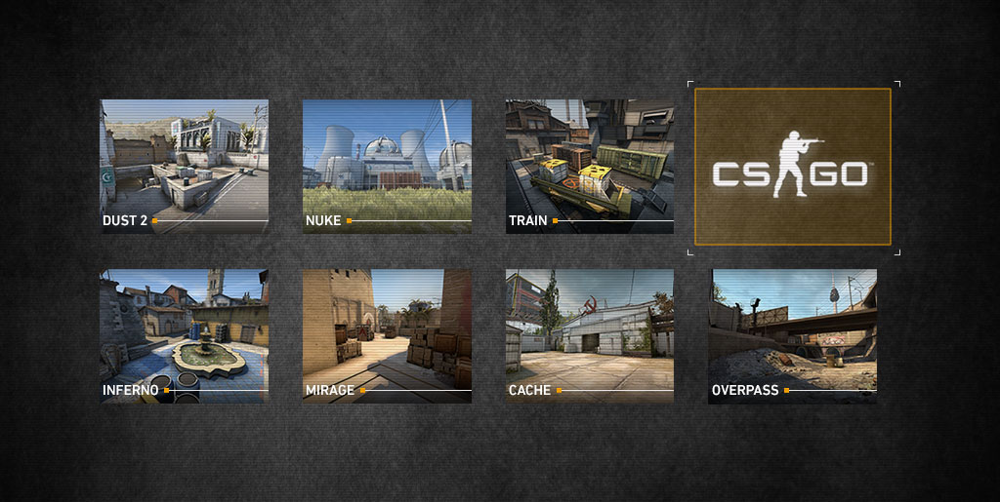
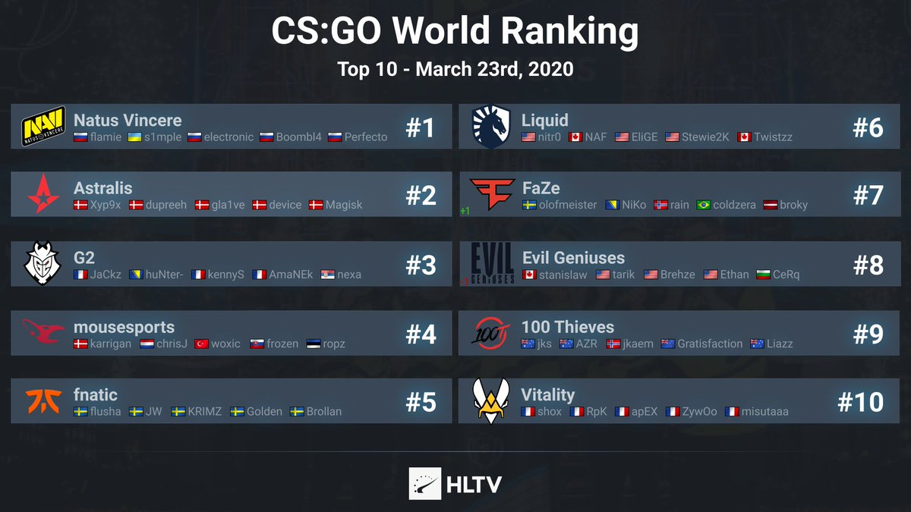
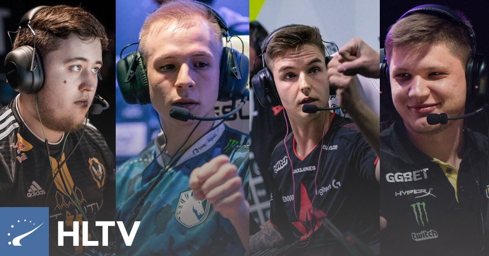

Welcome to a silly cs:go page

Introduction
CS:GO is a widely popular first-shooter game where two team "terrorists" and "counter-terrorists"
competes against each other with the task either to plant the bomb and explode it from the terrorists
side or defuse the bomb from the counter-terrorists side. Both teams can also win a round by killing the
whole enemy squad. There are 9 game modes, but the most popular mode is mr16(max-rounds) mode,
where the team which first
wins 16 rounds, wins the game. If both teams make 15 winning rounds, then it goes for overtime where enemies
play a total of 3 rounds on both sides, and the team which achieve more rounds in total of 6, wins the game.
Both teams and players have to pay attention to the economical part. Every winning round gives an amount of
dollars based on if your team won or lost a round and how many enemies did one player kill. The player who
killed the most enemies, gets more money for the next round, so he can get more money to use to buy weapons
and other devices
on the next round. The losing team achieve less money, but if a team consistanly keeps losing round by round,
the game
gives them a chance with more money after every round they lose until they finaly win a round and the
economic system
restarts. That was invented for not so long time ago so the cs:go scene became a little more competative
and not too one-sided for the best cs:go teams in the world.
Beside that, cs:go is a really big thing in
2020. There are being
arranged a lot of tournaments world wide with the prize money up to 1 000 000 dollars for a winning team.
Its a huge industry
that consists of a lot of teams, sponsors, companies and the players which plays on a professional teams
gets sallary which is quite higher than the sallary of an average worker in Norway. Players from top 10
teams in the world can
f.ex. earn between 20 000 to 100 000 dollars each month from the organizations the play for and sponsors
that pay them for making a commercial. If you want to find out more about counter-strike, click on the link below.
There are 7 different official maps where matches are played. Here you can see their names and how they look
As I talked about before, csgo is played on a professional level where players are getting sallary and attend at tournaments on lan and per today online because COVID-19 refuse team to meet at lan. The top rankings is very shaky and teams can ballance from top 1 to top 10 every month, but here is the list of top ranked teams per today
There are also a rankings of top player at cs:go which is based on performance by a player in one year. Since the end of 2020 isn't finnish yet, there is a tanking of top players in 2019 which you can check on the link below >
Top players in 2019 and before> 